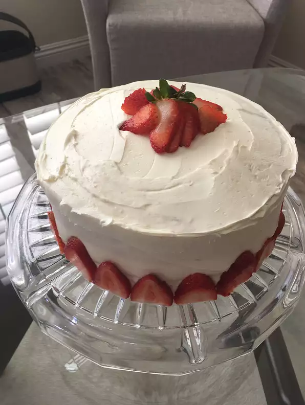

Strawberry Dream Cake

Description
Pudding like strawberry cake with a decadent white chocolate frosting
Ingredents
- 1 (18.25 ounce) package white cake mix
- 1½ cups of frozen sweetened strawberries, pureed
- 12 ounces of cream cheese
- 8 (1 ounce) squares of white chocolate
- 1 cup of heavy whipping cream
- 1 (8 ounce) container of frozen whipped topping, thawed
- ½ pint of sliced fresh strawberries
Directions
- Preheat oven to 350 degrees Fahrenheit (175 degrees Celsius). Grease two 9 inch round cake pans
- Make cake per directions except substitute the 1½ cups of starwberries for the water and add 1 extra egg, (if cake mix calls for 2 eggs: add 3), and 8 ounces of the cream cheese at room temperature. Beat well and pour into the prepared pans.
- Bake at 350 degrees Fahrenheit (175 degrees Celsius) for about 20 to 25 minutes or until golden brown. Check if the cake is done by inserting a tootpick in the center, and if it comes out with the wet cake mixture, then it is not done. Let the cake cool fully before applying frosting.
- To make frosting: Heat the heavy cream until just beginning to boil. Pour it over the white chocolate (chopped) and the remaining 4 ounces cream cheese. Mix well and let it cool. Once cooled, fold into the whipped topping. Garnish with sliced fresh strawberries.